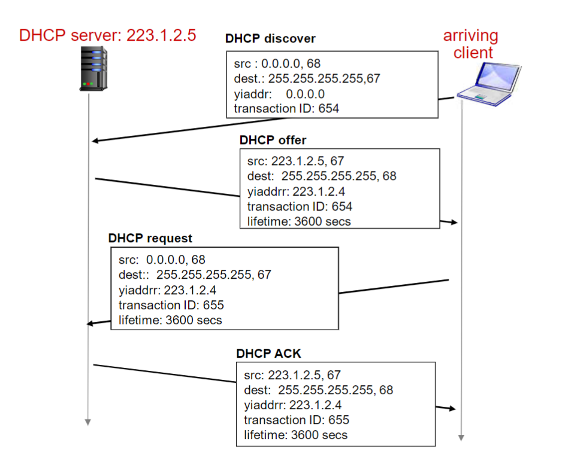

互联网计算-04网络层：数据平面
网络层作用
网络层服务
- 在发送主机和接收主机对之间传送段（segment）
- 在发送端将段封装到数据报中
- 在接收端，将段上交给传输层实体
- 网络层协议存在于每一个主机和路由器
- 路由器检查每一个经过它的 IP 数据报的头部
网络层的关键功能
- 转发：将分组从路由器的输入接口转发到合适的输出接口
- 路由：使用路由算法来决定分组从发送主机到目标接收主机的路径
- 路由选择算法
- 路由选择协议
类比：旅行
- 转发：通过单个路口的过程
- 路由：从源到目的的路由路径规划过程
数据平面、控制平面
数据平面
- 本地，每个路由器功能
- 决定从路由器输入端口到达的分组如何转发到输出端口
- 转发功能
- 传统方式：基于目标地址+转发表
- SDN 方式：基于多个字段+流表
控制平面
- 网络范围内的逻辑
- 决定数据报如何在路由器之间路由，决定数据报从源到目标主机之间的端到端路径
- 2 个控制平面方法:
- 传统的路由算法: 在路由器中被实现
- software-defined networking (SDN): 在远程的服务器中实现
网络服务模型
Q：从发送方主机到接收方主机传输数据报的“通道” ，网络提供什么样的服务模型？
对于单个数据报的服务:
- 可靠传送
- 延迟保证，如：少于 40ms 的延迟
对于数据报流的服务:
- 保序数据报传送
- 保证流的最小带宽
- 分组之间的延迟差
路由器
路由器结构概况
- 运行路由选择算法/协议
- 从输入到输出链路交换数据报
输入端口
最长前缀匹配
当给定目标地址查找转发表时，采用最长地址前缀匹配的目标地址表项
高效查找匹配：
- 利用 二进制串 的 树状结构
交换结构
- 将分组从输入缓冲区传输到合适的输出端口
- 交换速率：分组可以按照该速率从输入传输到输出
- 运行速度经常是输入/输出链路速率的若干倍
- N 个输入端口：交换机构的交换速度是输入线路速度的 N 倍比较理想，才不会成为瓶颈
通过内存交换
第一代路由器:
- 在 CPU 直接控制下的交换，采用传统的计算机
- 分组被拷贝到系统内存，CPU 从分组的头部提取出目标地址，查找转发表，找到对应的输出端口，拷贝到输出端口
- 转发速率被内存的带宽限制 (数据报通过 BUS 两遍)
- 一次只能转发一个分组
通过总线交换
- 数据报通过共享总线，从输入端口转发到输出端口
- 总线竞争: 交换速度受限于总线带宽
- 1 次处理一个分组
通过 Mesh 交换
- 同时并发转发多个分组，克服总线带宽限制
- Banyan（榕树）网络，crossbar (纵横) 和其它的互联网络被开发，将多个处理器连接成多处理器
- 当分组从端口 A 到达，转给端口 Y；控制器短接相应的两个总线
- 高级设计：将数据报分片为固定长度的信元，通过交换网络交换
输出端口
功能
- Packet classification
- Buffer management
- Scheduler
- Chooses among queued packets for transmission
- Select packets to drop when buffer saturates
数据报分类：
输入端口排队
- 当交换机构的速率小于输入端口的汇聚速率时， 在输入端口可能要排队
- 排队延迟以及由于输入缓存溢出造成丢失
输出端口排队
当数据报从交换机构的到达速度比传输速率快就需要输出端口缓存
- 数据报（分组）可能会被丢弃， 由于拥塞，缓冲区没有空间
由调度规则选择排队的数据报进行传输
- 优先权调度-谁会获得最优性能， 网络中立
当多个输入端口同时向输出端口发送时，缓冲该分组（当通过交换网络到达的速率超过输出速率则缓存）
排队带来延迟，由于输出端口缓存溢出则丢弃数据报！
需要多少缓存
丢弃策略：如果分组到达一个满的队列，哪个分组将会被抛弃
- tail drop: 丢弃刚到达的分组
- priority: 根据优先权丢失/移除分组
- random: 随机地丢弃/移除
调度策略
FIFO
First In First Out：按照分组到来的次序发送
优先权
发送最高优先权的分组
多类，不同类别有不同的优先权
- 类别可能依赖于标记或者其他的头部字段
Round Robin (RR)
- 多类
- 循环扫描不同类型的队列, 发送完一类的一个分组 ，再发送下一个类的一个分组，循环所有类
Weighted Fair Queuing (WFQ)
IP Packet Structure
IP Addressing
IP 地址：32 位标示，对主机或者路由器的接口编址
接口: 主机/路由器和物理链路的连接处
- 路由器通常拥有多个接口
- 主机也有可能有多个接口
- IP 地址和每一个接口关联
-> 一个 IP 地址和一个接口相关联
IP 地址分类
子网
一个子网内的节点（主机或者路由器）它们的 IP 地址的高位部分相同 ，这些节点构成的网络的一部分叫做子网
无需路由器介入，子网内各主机可以在物理上相互直接到达
内网 IP 地址
- 专用地址：地址空间的一部份供专用地址使用
- 永远不会被当做公用地址来分配, 不会与公用地址重复
- 只在局部网络中有意义，区分不同的设备
- 路由器不对目标地址是专用地址的分组进行转发
CIDR
Classless InterDomain Routing （无类域间路由）
- 子网部分可以在任意的位置
- 地址格式: a.b.c.d/x, 其中 x 是地址中子网号的长度
主机如何获得 IP 地址
- 系统管理员将地址配置在一个文件中
- DHCP: Dynamic Host Configuration Protocol
- 从服务器中动态获得一个 IP 地址
DHCP
目标：允许主机在加入网络的时候，动态地从服务器那里获得 IP 地址
- 可以更新对主机在用 IP 地址的租用期-租期快到了
- 重新启动时，允许重新使用以前用过的 IP 地址
- 支持移动用户加入到该网络（短期在网）
DHCP 工作概况:
- 主机广播“DHCP discover” 报文[可选]
- DHCP 服务器用 “DHCP offer”提供报文响应[可选]
- 主机请求 IP 地址：发送 “DHCP request” 报文
- DHCP 服务器发送地址：“DHCP ack” 报文

DHCP 返回:
- IP 地址
- 第一跳路由器的 IP 地址（默认网关）
- DNS 服务器的域名和 IP 地址
- 子网掩码 (指示地址部分的网络号和主机号)
- DHCP 服务器生成 DHCP ACK， 包含客户端的 IP 地址，第一跳路由器的 IP 地址和 DNS 域名服务器的 IP 地址
- DHCP 服务器封装的报文所在的帧转发到客户端，在客户端解封装成 DHCP 报文
- 客户端知道它自己的 IP 地址，DNS 服务器的名字和 IP 地址，第一跳路由器的 IP 地址
NAT: Network Address Translation
IPv6
初始动机: 32-bit 地址空间将会被很快用完
另外的动机:
- 头部格式改变帮助加速处理和转发
- TTL-1
- 头部 checksum
- 分片
- 头部格式改变帮助 QoS
IPv6 数据报格式:
- 固定的 40 字节头部
- 数据报传输过程中，不允许分片
和 IPv4 的其它变化
- Checksum: 被移除掉，降低在每一段中的处理速度
- Options: 允许，但是在头部之外, 被 “Next Header” 字段标示
- ICMPv6: ICMP 的新版本
- 附加了报文类型, e.g. “Packet Too Big”
- 多播组管理功能
从 IPv4 到 IPv6 的平移
两种方案：
- Dual Stack：两种格式相互转化
- 隧道：在 IPv4 路由器之间传输的 IPv4 数据报中携带 IPv6 数据报
通用转发和 SDN
通用转发：匹配+动作
流表抽象
泛化转发：简单的数据包处理规则
- 匹配：数据包头部字段中的模式值
- 动作：对于匹配的数据包：丢弃、转发、修改、匹配的数据包或将匹配的数据包发送到控制器
- 优先级：消除重叠模式
- 计数器：字节数和包数

OpenFlow
flow table entries:
抽象：
匹配+动作：抽象统一不同类型的设备

Middleboxes